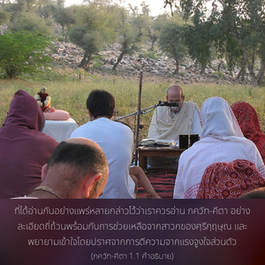

ธฺฤตราษฺฏฺร ตรัสว่า โอ้ สญฺชย หลังจากบรรดาโอรสของข้า และโอรสของ ปาณฺฑุ มาชุมนุมกันยังสถานที่ศักดิ์สิทธิ์แห่ง กุรุกฺเษตฺร มีความปรารถนาจะสู้รบ พวกเขาทำอะไรกัน

ภควัท-คีตา ศาสตร์แห่งองค์ภควานฺที่ได้อ่านกันอย่างแพร่หลายซึ่งสรุปใน คีตา-มาหาตฺมฺย (คำสรรเสริญ ภควัท-คีตา) ซึ่งกล่าวไว้ว่าเราควรอ่าน ภควัท-คีตา อย่างละเอียดถี่ถ้วนพร้อมกับการช่วยเหลือจากสาวกของศฺรีกฺฤษฺณ และพยายามเข้าใจโดยปราศจากการตีความจากแรงจูงใจส่วนตัว ตัวอย่างของการทำความเข้าใจที่ชัดเจนนั้นมีการอธิบายอยู่ใน ภควัท-คีตาเอง โดยอยู่ในวิธีที่เข้าใจโดย อรฺชุน ที่เข้าใจคำสอนซึ่งท่านได้ยิน คีตา จากองค์ภควานฺโดยตรง หากผู้ใดโชคดีพอที่มาเข้าใจ ภควัท-คีตา ตามสาย ปรมฺปรา โดยไม่มีการตีความจากแรงจูงใจส่วนตัวจะบรรลุถึงการศึกษาปรัชญาพระเวท และพระคัมภีร์ทั้งหมดในโลก ผู้อ่านจะพบว่าภควัท-คีตา มีทุกสิ่งทุกอย่างที่มีอยู่ในพระคัมภีร์เล่มอื่นๆ และผู้อ่านก็จะพบสิ่งที่หาจากที่อื่นไม่ได้ด้วยเช่นกัน และนี่คือมาตรฐานโดยเฉพาะของ ภควัท-คีตา ภควัท-คีตา เป็นศาสตร์แห่งองค์ภควานฺที่สมบูรณ์ ซึ่งบุคลิกภาพสูงสุดแห่งพระเจ้าศฺรีกฺฤษฺณทรงเป็นผู้ตรัสโดยตรง
ประเด็นที่สนทนากันระหว่าง ธฺฤตราษฺฏฺร และ สญฺชย ดังที่อธิบายไว้ใน มหาภารต เป็นหลักพื้นฐานแห่งปรัชญาอันยิ่งใหญ่นี้ เป็นที่เข้าใจกันว่าปรัชญานี้เกิดขึ้นที่สมรภูมิ กุรุกฺเษตฺร ซึ่งเป็นสถานที่แสวงบุญอันศักดิ์สิทธิ์ของนักบุญตั้งแต่สมัยโบราณของยุคพระเวท องค์ภควานฺทรงตรัสในขณะที่ทรงเสด็จลงมาบนโลกนี้ด้วยพระองค์เองเพื่อนำทางมนุษยชาติ
คำว่า ธรฺม-กฺเษตฺร (สถานที่สำหรับประกอบพิธีกรรมทางศาสนา) มีความสำคัญ เนื่องจากในสมรภูมิ กุรุกฺเษตฺร บุคลิกภาพสูงสุดแห่งพระเจ้าทรงประทับอยู่เคียงข้างฝ่ายของ ธรฺม-กฺเษตฺร พระบิดาแห่งราชวงศ์ กุรุ สงสัยอย่างยิ่งเกี่ยวกับความเป็นไปได้ที่ลูกชายของเขาจะได้รับชัยชนะในตอนท้ายสุด ด้วยความสงสัยนี้จึงตรัสถามเลขานุการ สญฺชย ว่า “พวกเขาทำอะไรกัน” พระองค์ทรงมั่นใจว่าโอรสของพระองค์ และโอรสของพระอนุชา ปาณฺฑุ ได้ไปชุมนุมกันที่สมรภูมิ กุรุกฺเษตฺร ด้วยความมั่นใจในการที่จะร่วมทำศึกสงคราม แต่คำถามนี้สำคัญ เพราะพระองค์ทรงไม่ปรารถนาให้ลูกพี่ลูกน้องและพี่น้องทั้งสองฝ่ายประนีประนอมกัน ทรงประสงค์ที่จะแน่ใจในชะตากรรมของเหล่าโอรสของพระองค์ในสนามรบ เพราะสงครามนี้ได้มีการเตรียมการให้เกิดขึ้นที่สมรภูมิ กุรุกฺเษตฺร ซึ่งเป็นที่ที่คัมภีร์พระเวทได้กล่าวไว้ว่า เป็นสถานที่สักการะบูชาของแม้กระทั่งเหล่าเทวดาบนสรวงสวรรค์ ธฺฤตราษฺฏฺร ทรงรู้สึกกลัวมากเกี่ยวกับอิทธิพลของสถานที่ศักดิ์สิทธิ์ ที่จะส่งผลต่อผลลัพธ์ที่จะเกิดขึ้นจากการต่อสู้ ทรงทราบดีว่าสิ่งนี้จะส่งผลดีให้ฝ่ายอรฺชุน และบรรดาบุตรของ ปาณฺฑุ เนื่องจากทุกพระองค์ในราชวงค์ ปาณฺฑุทรงมีคุณธรรมโดยธรรมชาติ สญฺชย เป็นศิษย์ของ วฺยาส ดังนั้น ด้วยพระเมตตาของ วฺยาส สญฺชย จึงสามารถมองเห็นภาพสมรภูมิ กุรุกฺเษตฺรได้ แม้ขณะที่นั่งอยู่ในห้องของ ธฺฤตราษฺฏฺร ธฺฤตราษฺฏฺร จึงทรงถาม สญฺชย เกี่ยวกับสถานการณ์ที่สมรภูมิ
ทั้งบรรดา ปาณฺฑว และบรรดาโอรสของ ธฺฤตราษฺฏฺร ทรงอยู่ในราชวงศ์เดียวกัน แต่จิตใจของ ธฺฤตราษฺฏฺร ได้ถูกเปิดเผยในนี้ว่า ทรงตั้งใจเพียงที่จะอ้างสิทธิ์เหล่าโอรสของพระองค์ว่าเป็น กุรุ เท่านั้น และตัดพวกโอรสของ ปาณฺฑุ ให้ออกจากกองมรดกแห่งราชวงศ์ เราจึงเข้าใจได้ว่าสถานภาพอันแท้จริงของ ธฺฤตราษฺฏฺร เกี่ยวกับความสัมพันธ์กับโอรสของ ปาณฺฑุ ซึ่งเป็นหลานของพระองค์นั้น เปรียบเสมือนในทุ่งนาที่วัชพืชที่ไม่จำเป็นถูกกำจัดออกไป ดังนั้น จึงเป็นที่คาดหวังตั้งแต่ตอนเริ่มต้นแล้วว่า ณ ศาสนสถานแห่ง กุรุกฺเษตฺร ที่พระบิดาแห่งศาสนาศฺรีกฺฤษฺณทรงปรากฏ ทุโรฺยธน และพรรคพวกเปรียบเสมือนวัชพืชที่จะต้องถูกกำจัดออกทั้งหมด และผู้ทรงธรรมซึ่งนำโดย ยุธิษฺฐิร จะได้รับการสถาปนาโดยองค์ภควานฺ และนี่คือความสำคัญของคำว่า ธรฺม-กฺเษเตฺร และ กุรุ-กฺเษเตฺร ที่นอกเหนือไปจากความสำคัญทางประวัติศาสตร์และพระเวท